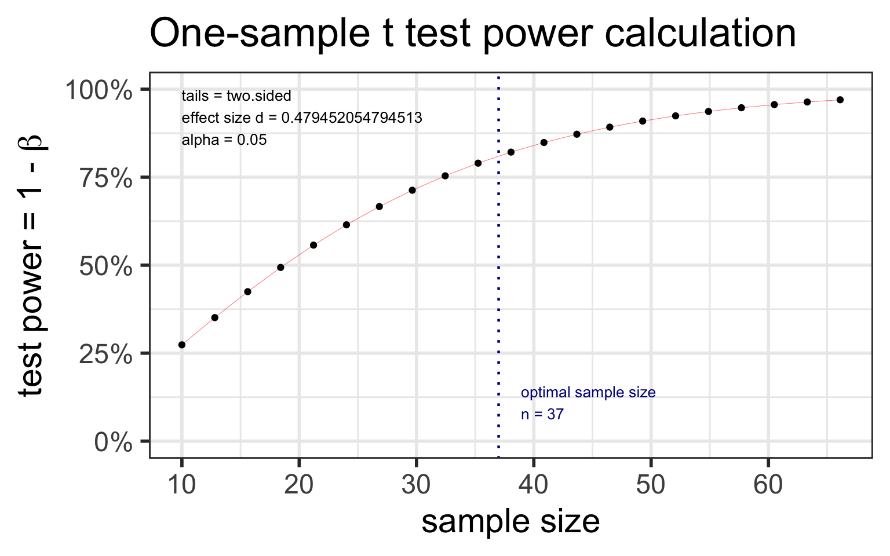
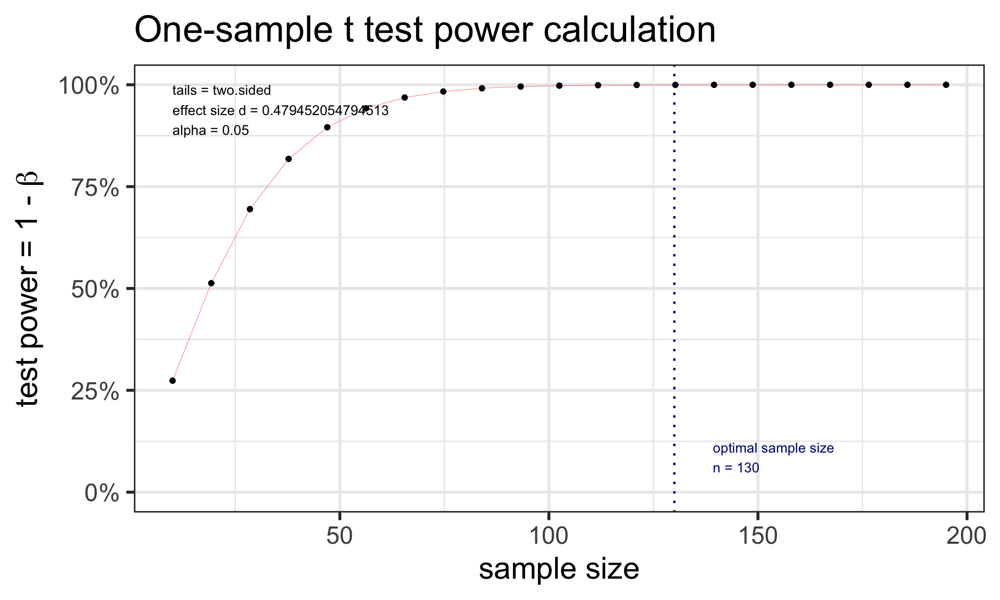
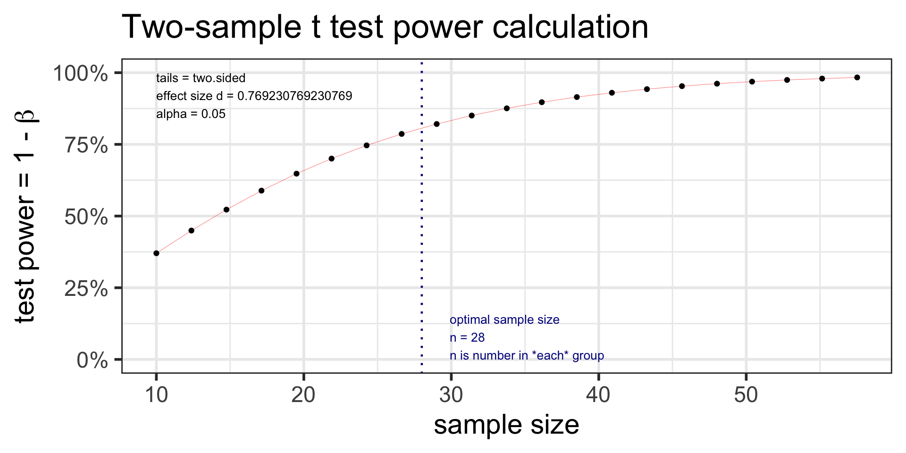
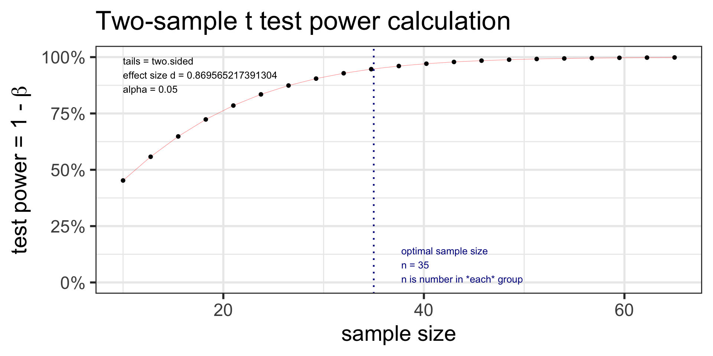

If the population mean is 98.2 instead of 98.6, we have a 99.98% chance of correctly rejecting \(H_0\) when the sample size is 130.
Sample size calculation for testing one mean
Recall in our body temperature example that \(\mu_0=98.6\) °F and \(\overline{x}= 98.25\) °F.
The p-value from the hypothesis test was highly significant (very small).
What would the sample size \(n\) need to be for 80% power?
Calculate\(n\)
given \(\alpha\), power ( \(1-\beta\) ), “true” alternative mean \(\mu\), and null \(\mu_0\)
Calculate d: \(d = \frac{\mu-\mu_0}{s}\)
pwr: sample size for one mean test
Specify all parameters except for the sample size:
library(pwr)t.n <-pwr.t.test(d = (98.6-98.25)/0.73, sig.level =0.05, power =0.80, type ="one.sample")t.n
One-sample t test power calculation
n = 36.11196
d = 0.4794521
sig.level = 0.05
power = 0.8
alternative = two.sided
plot(t.n)

We need 37 individuals to detect this difference with 80% power.
pwr: power for one mean test
Specify all parameters except for the power:
t.power <-pwr.t.test(d = (98.6-98.25)/0.73, sig.level =0.05, # power = 0.80, n =130,type ="one.sample")t.power
One-sample t test power calculation
n = 130
d = 0.4794521
sig.level = 0.05
power = 0.9997354
alternative = two.sided
plot(t.power)

We have 99.97% power to detect this difference with 130 individuals.
pwr: Two-sample t-test: sample size
Example: Let’s revisit our caffeine taps study. Investigators want to know what sample size they would need to detect a 2 point difference between the two groups. Assume the SD in both group samples is 2.6.
Specify all parameters except for the sample size:
t2.n <-pwr.t.test(d =2/2.6, sig.level =0.05, power =0.80, type ="two.sample") t2.n
Two-sample t test power calculation
n = 27.52331
d = 0.7692308
sig.level = 0.05
power = 0.8
alternative = two.sided
NOTE: n is number in *each* group
plot(t2.n)

We need 28 individuals to detect this difference with 80% power.
::::::
pwr: Two-sample t-test: power
Example: Let’s revisit our caffeine taps study. Investigators want to know what power they have to detect a 2 point difference between the two groups. The two groups are both size 35 (like in our previous example). Assume the SD in both group samples is 2.6.
Specify all parameters except for the power:
t2.power <-pwr.t.test(d =2/2.3, sig.level =0.05, n =35,type ="two.sample") t2.power
Two-sample t test power calculation
n = 35
d = 0.8695652
sig.level = 0.05
power = 0.9480091
alternative = two.sided
NOTE: n is number in *each* group
plot(t2.power)

We have 94.8% power to detect this difference with 35 individuals in each group.
Resources for power and sample size calculations
More software for power and sample size calculations: PASS
PASS is a very powerful (& expensive) software that does power and sample size calculations for many advanced statistical modeling techniques.
Even if you don’t have access to PASS, their documentation is very good and free online.
Based on following article with extra simulations by me: Hand, David J.; Daly, Fergus; McConway, K.; Lunn, D. and Ostrowski, E. (1993). A handbook of small data sets. London, U.K.: Chapman and Hall.↩︎